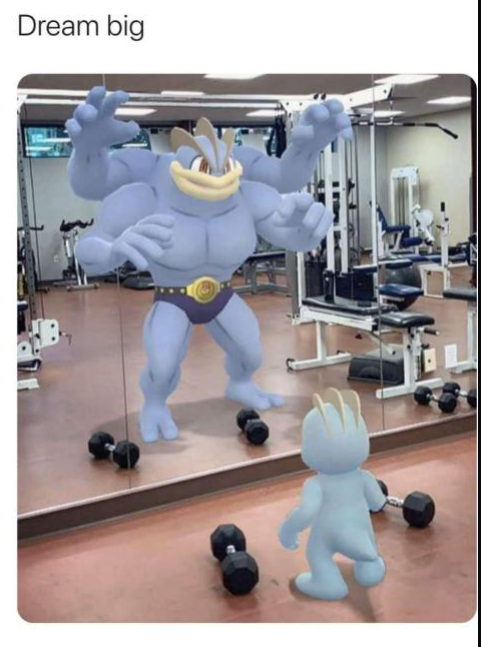

This is my very first website.
I enjoy animes such as Demon Slayer, Initial D, Jujutsu kaisen, Tokyo Revengers, Black Clover and those are just some to name a few.

Travelling has become something you can say I'm addicted to now. It started with small trips to different parts of Mexico as my family is from there. I have been to Spain and Japan I would say those are my most noteworthy trips. Inside the US I've traveled to New York, San Francisco, and Oregon. I hope to expand my travels very soon as it is fun seeing new places and indulging in new activities. One place that I would love to vist next would be South Korea.
When I have free time I find myself at the gym or playing video games on my computer. I try to workout 4 times a week for about an hour and 20 minutes. My goal is just to be as strong as I can. When I game I play league of legends mostly because I think of it as chess. The goal is to outplay the enemy team but I do find it sucks when you lose because the games take roughly 30 minutes. They have a game mode called rank where you gain LP points and move up in ranks.
| Iron | Bronze | Silver | Gold | Platinum | Diamond | Masters | Grand Masters | Challenger |
|---|---|---|---|---|---|---|---|---|
| IV-I | IV-I | IV-I | IV-I | IV-I | IV-I | 300LP | 600LP | 800LP |
Gym inspiration
